Best AI Chatbot for Writing: Simple Decision Guide
Start here if you want the fastest overview before drilling into narrower use cases.
Open starting guideCategory
Tutorials, comparisons, prompt examples, and beginner workflows for writing, reasoning, file analysis, planning, and everyday assistant work.
writing, reasoning, file analysis, planning, and everyday assistant work.
Use the comparison tables to decide which tool fits each job.
Start here
A strong category page should not make the reader guess which article matters first. These picks route a beginner into the fastest useful next step.
Start here if you want the fastest overview before drilling into narrower use cases.
Open starting guideUse a comparison page before you choose a subscription, workflow, or default tool in this cluster.
Open comparisonMove from tool discovery into a repeatable sequence that helps a beginner finish an actual task.
Open workflowUse a prompt library or checklist to tighten output quality before you publish, ship, or pay.
Open prompt or checklistUse the cluster well
This layer is here to increase search utility: when to use the category, what to compare, and how to avoid wasting a subscription on the wrong task.
You need help with writing, reasoning, file analysis, planning, and everyday assistant work and want a task-first route instead of opening tools at random.
Do not treat brand awareness as proof. Use the comparison pages to check workflow fit, output quality, and review burden first.
Pick one guide, test one real task, and only then decide whether this cluster needs a paid tool or just a better workflow.
Look for pages with examples, prompts, checklists, and mistake prevention. Those are stronger than generic tool roundups.
Library

Learn how to choose between the three major chatbots for daily work with a clear workflow, examples, and beginner mistakes to avoid.

Learn how to pick a writing assistant for outlines, drafts, editing, and tone with a clear workflow, examples, and beginner mistakes to.

Learn how to turn rough ideas into a usable article or email with a clear workflow, examples, and beginner mistakes to avoid.

Learn how to summarize and analyze long PDFs, notes, and reports with a clear workflow, examples, and beginner mistakes to avoid.

Learn how to use AI inside Docs, Gmail, Sheets, and Drive-style workflows with a clear workflow, examples, and beginner mistakes to avoid.

Learn how to review spreadsheets, PDFs, contracts, and notes without getting lost with a clear workflow, examples, and beginner mistakes.

Learn how to avoid vague prompts, missing context, and unverified answers with a clear workflow, examples, and beginner mistakes to avoid.

Learn how to build study plans, explain concepts, and quiz yourself responsibly with a clear workflow, examples, and beginner mistakes.

Learn how to handle customer replies, content drafts, SOPs, and planning with a clear workflow, examples, and beginner mistakes to avoid.

Learn how to protect sensitive data while still using AI productively with a clear workflow, examples, and beginner mistakes to avoid.

Alignment stories become product stories when they improve explanation quality and reduce policy whiplash in ambiguous tasks.
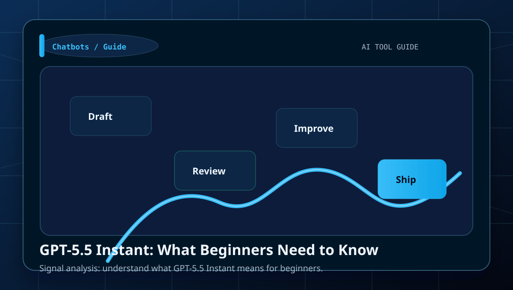
GPT-5.5 Instant prioritizes speed and clarity for everyday assistant work.
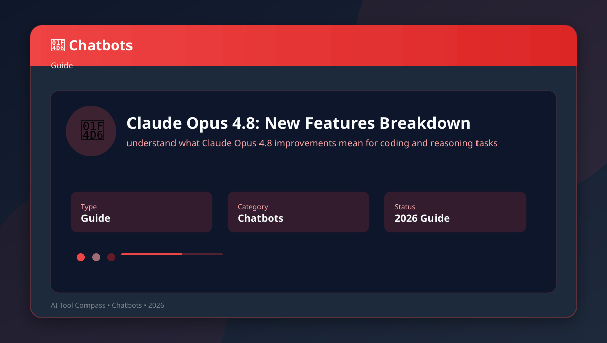
Opus 4.8 shows measurable gains in structured coding and multi-step reasoning.
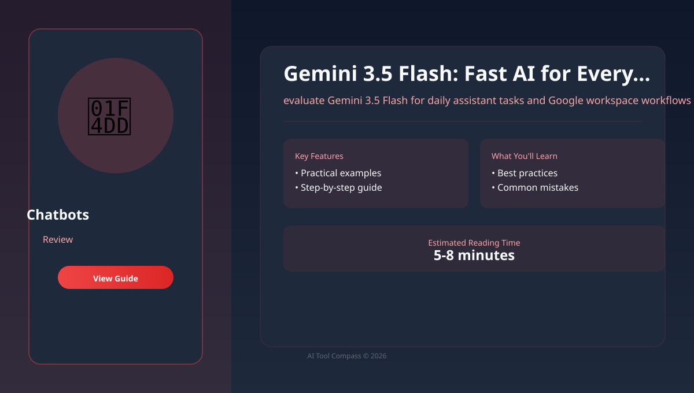
Flash excels when Google ecosystem integration matters more than raw reasoning.
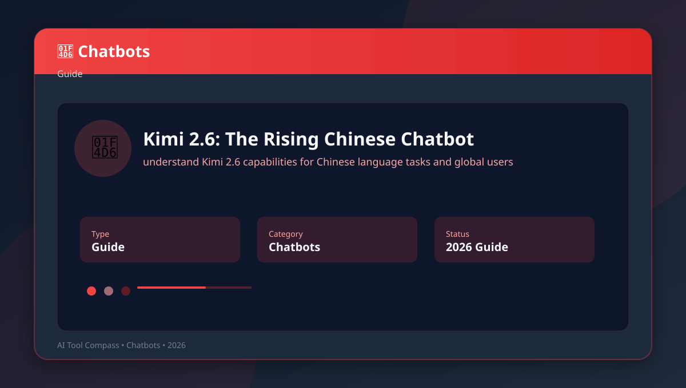
Kimi 2.6 matters most for Chinese language workflows and regional data compliance.
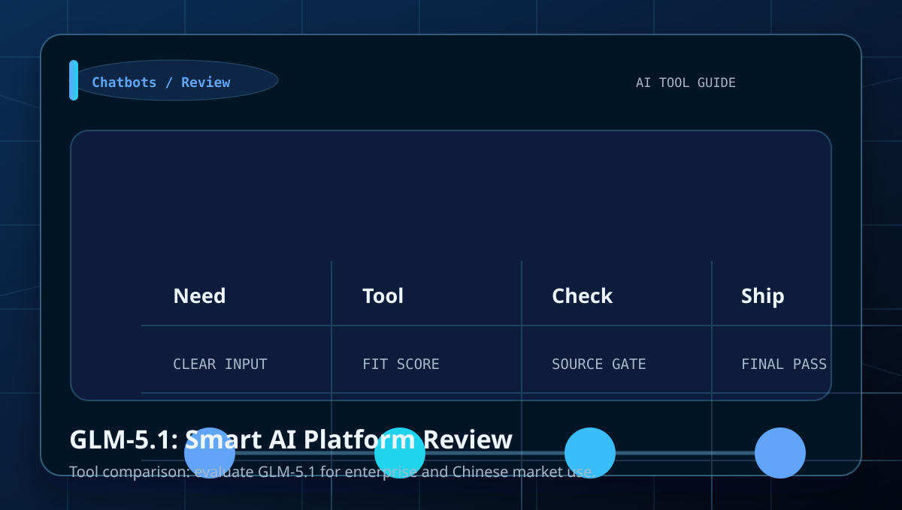
GLM-5.1 targets enterprise workflows with strong Chinese language support.
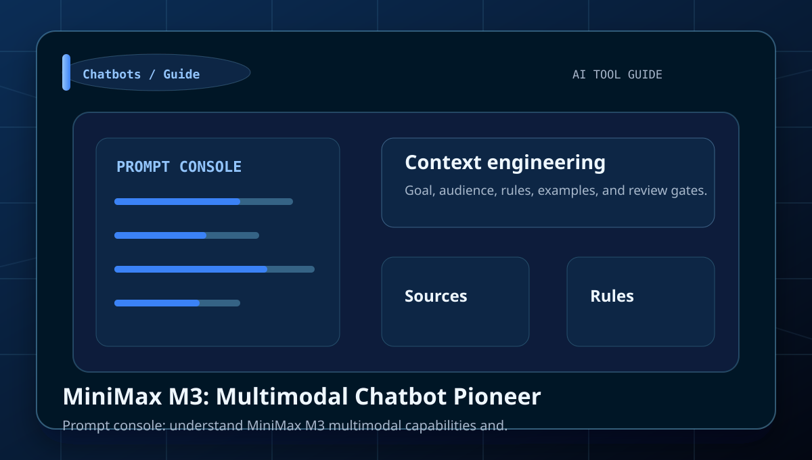
M3 shows promise for multimodal tasks but needs real-world workflow testing.
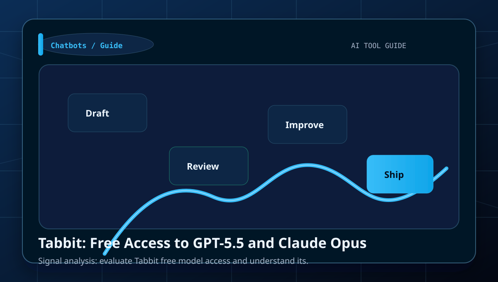
Free multi-model access raises questions about sustainability and data practices.
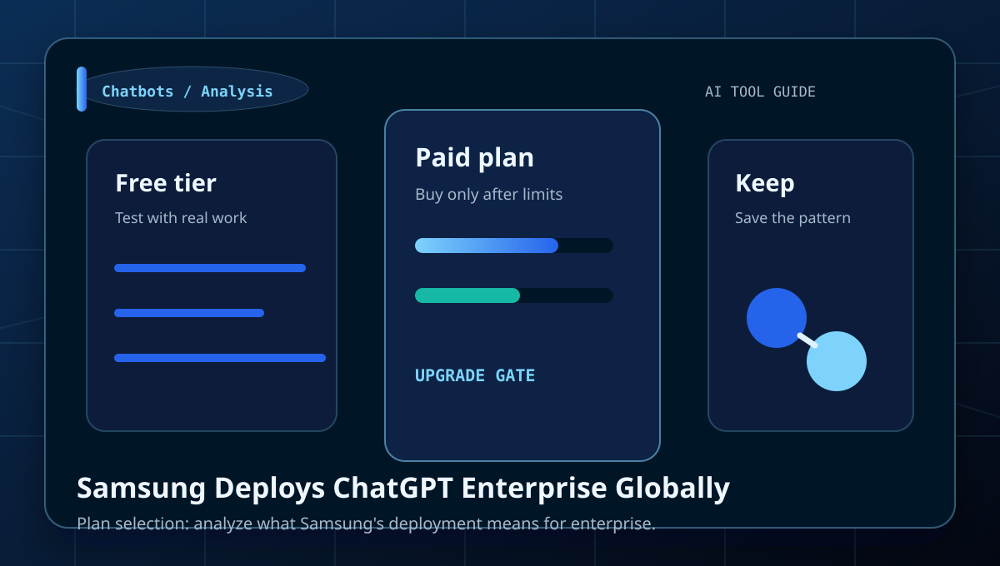
Large-scale enterprise deployments validate AI assistant viability for sensitive work.
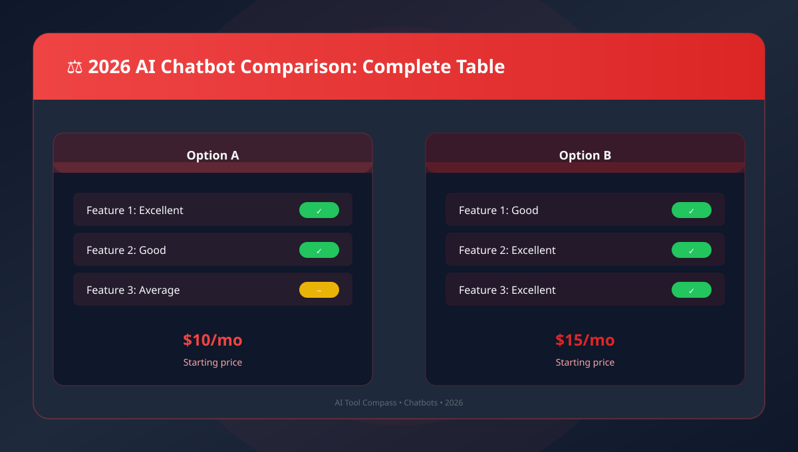
Use comparison tables as starting points, not final decision criteria.
Advanced prompting improves results but requires understanding model limitations.
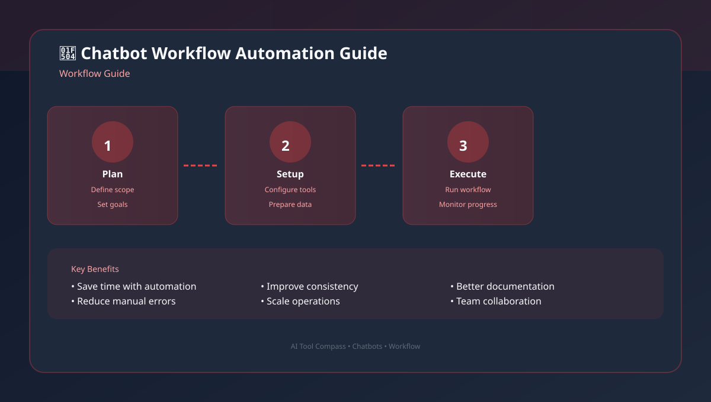
Workflow automation works best for repetitive, rule-based tasks with clear inputs.
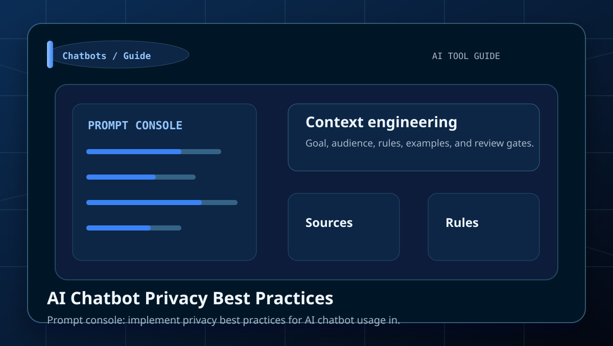
Privacy practices should match the sensitivity of tasks you delegate to AI.
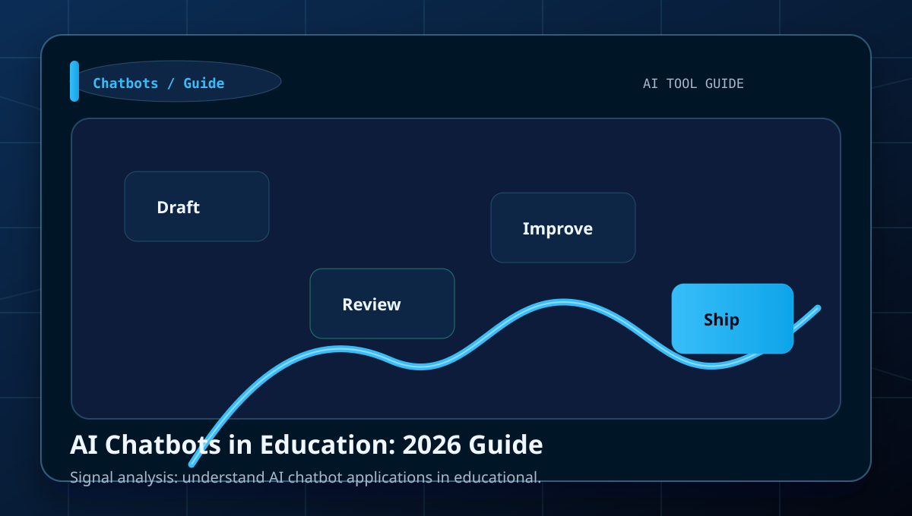
Educational AI works best as supplementary tool, not replacement for critical thinking.
Cost optimization requires understanding when to use different model tiers.
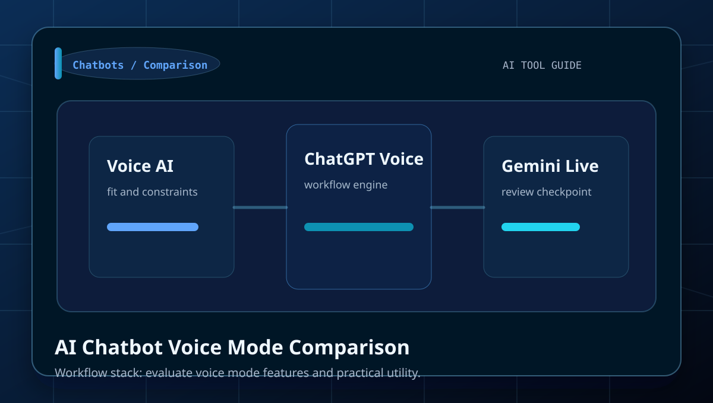
Voice modes show promise but need testing for specific use cases.